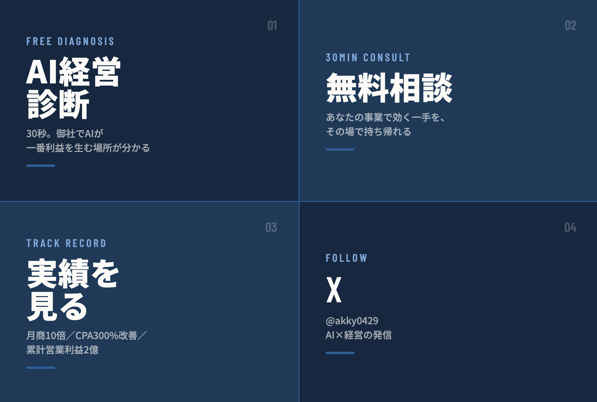

In the Chat
実際のLINE画面（再現）
‹
 秋山洋晃公式アカウント
秋山洋晃公式アカウント
秋山洋晃公式アカウント

↑ あいさつから6日後のリマインドまで、登録者が受け取る全メッセージを時系列で再現しています。
QRやリンクから登録。すぐにあいさつが届く。
ボタンをタップするだけの全11問。タイピング不要・約30秒。
「AIが一番利益を生む場所」と年間インパクトを提示。
営業→事例→誤解→相談案内→リマインドを自動でお届け。
ピンと来たら相談。秋山さんが日程を調整。
秋山洋晃公式アカウント

↑ あいさつから6日後のリマインドまで、登録者が受け取る全メッセージを時系列で再現しています。
登録者が自由にメッセージを送ったときや、別の入口から入ったときの動きです。